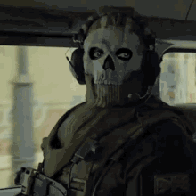
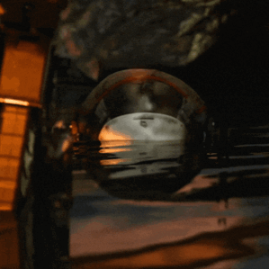

Honor Of Kings Worlds
1. História do Jogo
2. Jogabilidade e Mecânicas
3. A Expansão para o Mundo Aberto
4. Análise dos Personagens
5. Personagens Baseados em Mitologias
6. Temática e Ambientação
7. Estilo Artístico
1. História do Jogo
Honor of Kings foi lançado em 2015 pela TiMi Studios, uma subsidiária da gigante chinesa Tencent, e se tornou um dos jogos mais populares na China, alcançando mais de 100 milhões de usuários ativos mensais. Originalmente, o jogo foi desenvolvido como uma versão móvel de MOBA (Multiplayer Online Battle Arena), com influências de jogos como League of Legends. Sua popularidade no mercado chinês foi impulsionada pela sua acessibilidade, gráficos de alta qualidade e por seu sistema de heróis inspirado em figuras da mitologia e história chinesa. Em 2022, o jogo expandiu suas fronteiras com o lançamento do Honor of Kings World, que introduziu o mundo aberto e a exploração, marcando uma evolução do título original. Nesse novo jogo, a proposta foi transformar a experiência anterior de batalhas em uma experiência mais imersiva, permitindo que os jogadores interagissem de forma mais livre com o mundo, em vez de se limitarem apenas a mapas de batalhas.
O novo jogo também introduziu uma nova camada de narrativa, com os jogadores não apenas competindo, mas também explorando e criando histórias próprias dentro de um universo dinâmico. Honor of Kings World é um reflexo de como os desenvolvedores estão buscando expandir a experiência dos jogos mobile, oferecendo aos jogadores uma imersão maior em mundos ricos e complexos. Ao longo dos anos, o jogo evoluiu para incorporar mais elementos de RPG, com novos sistemas de progressão de personagens e missões mais profundas.
2. Jogabilidade e Mecânicas
A jogabilidade de Honor of Kings World combina aspectos de RPG com elementos de MOBA e ação, criando uma experiência única para os jogadores. Em termos de mecânica básica, o jogo mantém a essência de um MOBA tradicional, com batalhas intensas e foco no trabalho em equipe, mas agora com a adição de uma exploração mais profunda de um mundo aberto. Os jogadores podem controlar heróis com habilidades distintas, e cada um possui características únicas que influenciam o desempenho em batalha. A complexidade das habilidades permite uma estratégia rica, onde os jogadores precisam coordenar ataques, defesas e movimentação de maneira sincronizada.
Além disso, as mecânicas de combate foram amplificadas com a inclusão de novos sistemas de interação com o ambiente. Em vez de se limitar apenas a enfrentar adversários em arenas fechadas, os jogadores podem agora explorar vastos campos, cidades, florestas e até masmorras, onde precisam interagir com NPCs, resolver quebra-cabeças e completar missões secundárias para progredir. Essa mudança também adiciona uma camada de personalização aos personagens, pois o jogador pode decidir como melhorar suas habilidades, equipar diferentes itens e desenvolver o personagem de acordo com seu estilo de jogo.
A introdução de um sistema de progressão, onde os jogadores podem evoluir suas habilidades, equipamentos e relações com outros personagens, proporciona um senso de crescimento que é fundamental para jogos modernos desse tipo. Com isso, o título vai além da simples vitória em batalhas, incentivando a exploração e interação com o mundo ao redor.
3. A Expansão para o Mundo Aberto
Com a transição para o Honor of Kings World, o jogo deu um passo significativo ao incorporar elementos de mundo aberto. A principal mudança foi a capacidade de os jogadores saírem das arenas de batalha e explorarem livremente um mundo vasto e dinâmico, repleto de diferentes ambientes e histórias. Enquanto no original o foco era quase exclusivamente nas batalhas e nos modos competitivos, agora há uma rica narrativa que se desenrola à medida que o jogador explora cidades antigas, florestas encantadas e montanhas misteriosas.
A exploração no mundo aberto também traz novos desafios, como a necessidade de gerenciar recursos, enfrentar inimigos fora das batalhas tradicionais e interagir com uma variedade de personagens não jogáveis (NPCs). Além disso, há uma forte ênfase na coleta e personalização de equipamentos, o que aumenta a complexidade do jogo. Essa transição para o mundo aberto permite que os jogadores vivenciem uma experiência mais imersiva, com uma sensação de liberdade e aventura, algo que antes não era possível dentro das limitações das arenas de combate.
Essa mudança de perspectiva também tem impacto direto no modo como os jogadores interagem com o universo do jogo. O enredo não é mais contado apenas através de missões e diálogos diretos, mas é vivido através da exploração do cenário, onde o jogador descobre peças de história em locais escondidos, enfrenta inimigos que não são parte do enredo principal e toma decisões que podem influenciar o futuro da narrativa.
4. Análise dos Personagens
Os personagens de Honor of Kings World são um dos maiores atrativos do jogo. Muitos dos heróis são inspirados em figuras mitológicas e históricas, trazendo à tona figuras que são altamente reverenciadas na cultura chinesa, como o estrategista militar Zhuge Liang e a lendária guerreira Hua Mulan. Cada personagem possui um conjunto único de habilidades, armas e uma história rica, o que os torna não apenas interessantes para o combate, mas também profundos do ponto de vista narrativo.
O design dos personagens também é notável, combinando elementos tradicionais da cultura chinesa com visuais modernos e estilizados. Muitos dos heróis possuem trajes que refletem a sua origem histórica ou mitológica, ao mesmo tempo que as suas habilidades mágicas ou técnicas são inspiradas por contos antigos. Por exemplo, a personagem de Guan Yu, um herói lendário da história chinesa, tem habilidades relacionadas à sua força e lealdade, elementos que são evidentes tanto no combate quanto em sua narrativa pessoal dentro do jogo.
Além dos heróis, o jogo também introduz vilões carismáticos e antagonistas que desafiam o jogador tanto em batalha quanto em termos de narrativa. Esses vilões são frequentemente figuras misteriosas, com motivações complexas que são exploradas ao longo do jogo. A interação com esses personagens, seja por meio de confrontos diretos ou através de diálogos, dá profundidade à história e torna cada missão e batalha mais envolvente.
5. Personagens Baseados em Mitologias
Uma das características mais interessantes de Honor of Kings World é sua abordagem ao usar personagens inspirados em mitologias e figuras históricas chinesas. Essas figuras são mais do que simples heróis de batalha; elas são representações de lendas e crenças profundamente enraizadas na cultura chinesa. O personagem de Zhuge Liang, por exemplo, é uma das figuras mais reverenciadas na história chinesa, sendo um estrategista militar de habilidades excepcionais. No jogo, ele é retratado com habilidades que refletem sua inteligência e destreza tática, e suas interações com outros heróis e vilões fazem referência às suas conquistas históricas.
Outro exemplo é Hua Mulan, uma guerreira que se disfarçou de homem para lutar no lugar de seu pai, uma história que se tornou um símbolo de coragem e sacrifício. No jogo, Mulan é uma personagem poderosa, com habilidades que refletem sua habilidade em combate e sua natureza corajosa. Ao usar esses personagens mitológicos, o jogo não só cria uma conexão emocional com os jogadores que conhecem essas histórias, mas também oferece uma rica base para explorar temas como honra, sacrifício e estratégia.
Esses personagens não são apenas elementos de combate, mas são também peças fundamentais para o desenvolvimento da história e da imersão no mundo do jogo. Eles permitem que o jogador se conecte com a rica história da China e a cultura que deu origem a essas lendas, o que torna a experiência do jogo mais profunda e significativa.
6. Temática e Ambientação
O Honor of Kings World se destaca por sua temática profundamente enraizada na cultura chinesa, misturando elementos de mitologia, história e fantasia. A ambientação do jogo é um dos pontos fortes, com cenários que variam de majestosas cidades antigas a paisagens naturais deslumbrantes, como florestas densas, montanhas nevoentas e rios tranquilos. Cada região do jogo é projetada com detalhes minuciosos que buscam refletir a rica tradição cultural da China, mas também trazem elementos fantásticos que enriquecem a experiência de jogo.
A ambientação não é apenas um cenário de fundo; ela é integrada à narrativa e à jogabilidade. Os jogadores não apenas atravessam esses ambientes, mas interagem com eles, enfrentando desafios que estão diretamente relacionados ao que cada local representa. Por exemplo, em uma cidade antiga, o jogador pode encontrar desafios baseados em mistérios históricos ou lendas locais. Em outras áreas, como florestas encantadas, os jogadores podem se deparar com criaturas místicas ou resolver quebra-cabeças baseados em mitologia.
Além disso, a música e os efeitos sonoros desempenham um papel crucial em criar a atmosfera do jogo. Com uma trilha sonora que mistura instrumentos tradicionais chineses com composições modernas, o jogo consegue capturar a essência da cultura, enquanto também proporciona uma experiência auditiva envolvente.
7. Estilo Artístico
O estilo artístico de Honor of Kings World é um dos elementos que mais chama a atenção desde o primeiro momento. A mistura de realismo com um toque estilizado traz uma sensação de grandiosidade, com modelos de personagens e cenários incrivelmente detalhados, mas ao mesmo tempo mantendo uma aura de fantasia. O design de personagens é profundamente influenciado pela arte tradicional chinesa, mas com um toque moderno que os torna visualmente impressionantes e únicos. As roupas, as armas e os detalhes dos personagens refletem a estética da antiga China, mas são estilizados de maneira que se encaixam no tom fantástico do jogo.
Além dos designs dos personagens, os cenários são igualmente impressionantes. Cada ambiente do jogo foi cuidadosamente projetado para refletir diferentes aspectos da cultura e história chinesas, mas com uma abordagem criativa que mistura o realismo e a fantasia. As cores vibrantes, os detalhes intrincados e as paisagens de tirar o fôlego criam um mundo visualmente cativante que dá vida ao universo do jogo.
O jogo também utiliza efeitos especiais de maneira eficaz para criar cenas de combate emocionantes e épicas. As habilidades especiais dos personagens, como magias ou ataques poderosos, são visualizadas com efeitos impressionantes que aumentam a intensidade das batalhas. A combinação de todos esses elementos torna Honor of Kings World um espetáculo visual, com um estilo artístico único que realmente se destaca no cenário de jogos móveis.